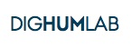
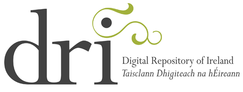

|
Jobs
Friday, 14 September 2012
PhD scholarships for the PhD programme – open notice (4+4 and 5+3 scheme)
A number of SU PhD scholarships SU (4+4) and PhD scholarships (5+3) are announced at the Graduate School, Arts, Faculty of Arts at Aarhus University provided the necessary funding is available. These scholarships are available as of 1 February 2013 for a period of up to three years (5+3) and of up to four years (4+4). Candidates who are awarded the scholarship must commence their PhD programme on1 February 2013.
Scholarships are available in all fields and areas of research at the Faculty of Arts.
A prerequisite for allocation of a PhD scholarship/SU PhD scholarship is that you are enrolled as a PhD student at the Graduate School of Arts.
The PhD student must complete the studies in accordance with the current regulations for the PhD degree programme, currently the Ministerial Order of 14 January 2008 on the PhD Programme at the Universities: http://talent.au.dk/phd/arts/rulesandforms/thephddegreeprogramme/
Description of the Graduate School’s PhD programme (4+4 and 5+3): http://talent.au.dk/phd/arts/phdstudystructure/
Wednesday, 05 September 2012
 The Department of Digital Humanities (DDH) is looking for a number of skilled developers to join its Research and Development team. These posts all involve implementation and functional design work (in collaboration with other members of the R&D team and external partners) across two - three varied and challenging research projects. The Department of Digital Humanities (DDH) is looking for a number of skilled developers to join its Research and Development team. These posts all involve implementation and functional design work (in collaboration with other members of the R&D team and external partners) across two - three varied and challenging research projects.
The closing date is 13th September 2012 with interviews to be held during the week beginning 17th September 2012. Please follow this link to find out details: http://www.jobs.ac.uk/enhanced/linking/kings/aug2012/linkingpage.html
Unit: Faculty for Cultural Studies (Institute of Indology and Tibetology) Start Date: 1 October 2012 Application Deadline: 31 August 2012 Salary: TV-L E 13 payscale (between 3,187 and 4,599 euros per month depending on experience) Term of appointment: until 31 December 2015, with the possibility of renewal
Part‐time employment is possible in principle.
Wednesday, 15 August 2012
 DIGHUMLAB is a newly established research infrastructure with the goal of supporting digital humanities and social science research by providing common virtual access to relevant digital and digitised resources for the humanities and the social sciences. We are looking for a computer scientist, software engineer, or a person with similar qualifications to work for a distributed common secretariat, headed by the project leader (based in Aarhus). Employment will be on a project basis for a 5-year period, and the workplace will be the University of Copenhagen, Centre for Language Technology. You will report to the DIGHUMLAB project leader but both you and your personal line manager will be located at the University of Copenhagen. Because of the distributed nature of DIGHUMLAB, you will be required to travel to Odense, Aarhus, and Aalborg and also to European partners and meetings. The closing date for applications is 23:59 CET, 9 September 2012.
|
The Department of Digital Humanities, King's College London, is advertising for 4 technical research positions, as follows.
NB: the closing date for these positions is 13 August 2012. 1. One year, fixed term. Data modelling and analysis, and the design and development of both editorial and administrative tools, and public facing web applications, across three research projects in the department's portfolio: The Art of Making, The Making of Charlemagne's Europe, and the Breaking of Britain.
For more information see: http://bit.ly/M66Joq
2. Two fixed-term contracts for one year. Data modelling and analysis, and the design and development of both editorial and administrative tools, and public facing web applications, across three research projects in the department's portfolio.
For more information see: http://bit.ly/OmNAZL and http://bit.ly/LJuNMt
3. Fixed-term contract, ending 31 January 2013. Development of the Corpus of Romanesque Sculpture in Britain and Ireland (CRSBI), which aims to create a permanent record of Romanesque sculpture, and numerous expert volunteers are engaged in the necessary research work and the capture of metadata and photography across Britain and Ireland.
For more information see: http://bit.ly/M66GZN
 The Digital Resources and Imaging Services of the library at Trinity College Dublin has advertised a posting for a Programmer/Analyst. The programmer/analyst will be a key member of the libraries digitisation team, and will provide support and leadership with the planning, development and implementation of the technical infrastructure of the Trinity College Digital Library Collections Repository. This position will provide programming and technical expertise to support the ongoing development of an open source Fedora Commons-based Digital Library Repository ( http://fedora-commons.org ** Not to be confused with the Linux Operating System) designed to provide new electronic access to the rare and unique Trinity College Library Special Collections and Library Research Resources, whilst ensuring the long term preservation of these unique and valuable digital resources and assets. The Digital Library Collections Repository can be viewed at http://digitalcollections.tcd.ieApplications are due by the 20 July 2012. More information and particulars can be found at: http://Jobs.tcd.ie in the Library Department section.
The Centre Virtuel de la Connaissance sur l'Europe seeks two Digital Humanists. One of them will help develop the CVCE website API (http://www.cvce.eu/), the other will work on a text edition project (texts related to the history of European integration). Based in Luxembourg, the CVCE is an interdisciplinary research centre specialising in the European integration process. Its mission is to create, share and valorise knowledge in an innovative digital environment. The Centre develops and publishes digital research corpora and subject files for the scientific and academic communities based on research projects in European integration studies (EIS). Knowledge is created and disseminated by means of the Centre’s specialised, Web-based digital infrastructure. For further details please visit http://www.cvce.eu/travailler-au-cvce/offre-emploi
The Digital Repository of Ireland are advertising a Educational Technologist role for the DRI.
The Educational Technologist will be employed on a three year fixed term contract (four day week) starting 1st August 2012.
This contract is funded under PRTLI 5 and will be filled on a three year fixed term contract (four day week). The successful applicant must be in a position to start no later than the 1st August 2012. The Educational Technologist is an important, core role in the project team, having responsibility for the external presentation of DRI, DRI public events, and leading the skills and training programme of the project for the benefit of our stakeholders. The project office is based in Dawson Street, Dublin 2.
Please see http://www.ria.ie/our-work/about/human-resources.aspx for more details.
Applications should be submitted through the Irish Jobs website http://www.irishjobs.ie/Jobs/Educational-Technologist-6812833.aspx before the closing date Thursday 28thJune at 12 noon.
|
|
|
|
|
|
Page 2 of 3 |
|
Information brochure

Download PDF 
|